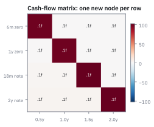
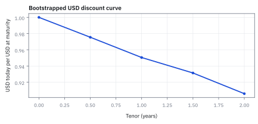
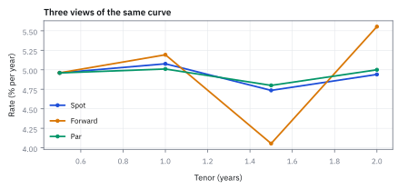
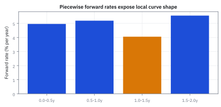
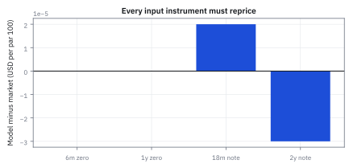

20.1 Zero Rates, Forward Rates, and Bootstrapping
เปลี่ยนราคา bond หลายอายุให้เป็น discount curve เส้นเดียวที่ใช้ตั้งราคากระแสเงินสดทุกวันส่งมอบ
มีบัตรรับเงิน 100 USD สองใบ: ใบหนึ่งได้เงินใน 6 เดือน อีกใบได้เงินใน 1 ปี แต่ราคาวันนี้ไม่เท่ากัน. ลองเดาก่อนว่าเงิน 1 USD ในวันไหนแพงกว่า?
เราเริ่มจากบัตรที่จ่ายครั้งเดียว เพราะราคาของมันบอกค่าแปลงเงินอนาคตเป็นเงินวันนี้ตรง ๆ. ค่าแปลงนี้ชื่อ discount factor.
เฉลย: เงินที่ได้เร็วกว่าแพงกว่าในวันนี้ เพราะต้องรอน้อยกว่า. ค่อยใช้ค่าระยะสั้นที่รู้แล้วแก้บัตรที่จ่ายหลายงวดทีละใบ; วิธีต่อชิ้นส่วนนี้เรียก bootstrapping. curve จึงไม่ใช่เลขดอกเบี้ยเส้นเดียว แต่เป็นตารางแปลงเวลาของเงินสด.
ศัพท์ที่ต้องใช้ก่อนสร้าง curve
- zero-coupon bond
- bond ที่ไม่มี coupon ระหว่างทางและจ่ายเงินก้อนเดียวเมื่อครบกำหนด ใช้สังเกต discount factor ของวันนั้นโดยตรง
- discount factor
- ราคาวันนี้ของเงินหนึ่ง USD ที่จะได้รับในอนาคต ใช้ย้าย cash flow ทุกก้อนไปยัง valuation date เดียวกัน
- zero rate
- อัตราต่อปีที่สอดคล้องกับ discount factor ของ maturity เดียวภายใต้ compounding convention ที่ระบุ ใช้สรุปราคาของเงินตามเวลา
- spot rate
- อัตราที่เริ่มจากวันนี้และสิ้นสุดที่ maturity ที่กำหนด ในหัวข้อนี้ใช้ความหมายเดียวกับ zero rate
- forward rate
- อัตราที่ล็อกวันนี้สำหรับช่วงเวลาที่เริ่มในอนาคต ใช้แยกต้นทุนเงินของแต่ละช่วงออกจาก spot rate ที่เฉลี่ยตั้งแต่วันนี้
- par yield
- coupon rate ที่ทำให้ราคาของ coupon bond เท่ากับ par ภายใต้ payment schedule ที่กำหนด ใช้เป็น market quote แต่ไม่ใช่ discount rate ของทุก cash flow
- bootstrapping
- การแก้ discount factor ทีละ maturity จาก instrument ที่สั้นไปยาว โดยใช้ค่าที่แก้แล้วกับ cash flow ก่อนหน้า ใช้สร้าง curve จากราคา observable
- interpolation
- กฎเติมค่าระหว่าง curve nodes ที่มี quote ใช้ตั้งราคา cash flow ซึ่ง maturity ไม่ตรงกับ instrument ในตลาด
- day-count convention
- กฎแปลงจำนวนวันจริงเป็นส่วนของปี เช่น Actual/365 ใช้กำหนดทั้งดอกเบี้ยสะสมและ horizon ในสูตร
- clean price
- ราคา bond ที่ไม่รวม accrued interest ใช้เป็นรูปแบบ quote ทั่วไปและต้องแปลงเป็น dirty price ก่อนตั้งราคากระแสเงินสด
- dirty price
- เงินที่ชำระจริงเท่ากับ clean price บวก accrued interest ใช้เป็น present value ที่เข้า bootstrapping
- curve node
- คู่ของ maturity กับค่าที่ curve เก็บไว้ เช่น log discount factor ใช้เป็นตัวแปรที่ solver แก้และ interpolation เชื่อมต่อ
สัญกรณ์ หน่วย และเวลาอ้างอิง
| สัญลักษณ์ | ความหมาย | หน่วย |
|---|---|---|
| $t_0=0$ | valuation date และจุดเริ่มของทุก horizon | ปี |
| $T_i$ | maturity หรือ payment date ลำดับที่ $i$ วัดจาก valuation date | ปี |
| $D(0,T_i)$ | discount factor จาก $T_i$ กลับมาวันนี้ | USD วันนี้ต่อ USD ที่ $T_i$ |
| $z(0,T_i)$ | zero rate แบบ continuously compounded จากวันนี้ถึง $T_i$ | ต่อปี |
| $f(T_{i-1},T_i)$ | forward rate แบบ continuously compounded ของช่วงสอง node | ต่อปี |
| $P$ | dirty price ต่อ par 100 ของ instrument | USD ต่อ par 100 |
| $C_i$ | cash flow ที่จ่าย ณ $T_i$ | USD |
| $n$ | จำนวน cash flows หรือ curve nodes ที่รวมในสมการ | จำนวนเต็ม |
| $c$ | annual coupon rate ของ note | ต่อปี |
| $m$ | จำนวน coupon payments ต่อปี | ครั้งต่อปี |
| $N$ | notional หรือ par amount | USD |
| $PV$ | present value ของ cash flow หรือ instrument ณ valuation date | USD |
| $\tau_i$ | year fraction ของ accrual period ลำดับที่ $i$ | ปี |
| $F_{1,1.5}$ | มูลค่าของเงินหนึ่ง USD ณ 1 ปีที่เติบโตถึง 1.5 ปี | USD ต่อ USD |
ที่มาที่ไป: อัตราดอกเบี้ยไม่ได้มีค่าเดียว
ในบทก่อน ๆ เราใช้อัตราดอกเบี้ยตัวเดียวคิดลดทุกอย่าง ซึ่งเป็นการทำให้ง่ายที่ยอมรับได้ตอนเรียน แต่ยอมรับไม่ได้ตอนทำงาน
ความจริงคือเงินที่ได้คืนในหนึ่งปีกับในสิบปี ถูกคิดลดด้วยอัตราคนละตัว และความต่างนั้นใหญ่พอ จะเปลี่ยนราคาไปหลายเปอร์เซ็นต์
ปัญหาคือตลาดไม่ได้ประกาศอัตราเหล่านั้นออกมาตรง ๆ มันประกาศเป็นราคาของตราสารที่จ่ายเงินหลายงวด ซึ่งผสมอัตราหลายตัวเข้าด้วยกัน
งานของหัวข้อนี้คือแกะอัตราของแต่ละอายุออกมาทีละจุด โดยใช้จุดที่แกะได้แล้วช่วยแกะจุดถัดไป ซึ่งเป็นงานที่ทุกโต๊ะตราสารหนี้ทำใหม่ทุกเช้า
ประกาศ modeling convention ก่อนแตะตัวเลข
เริ่มจากเกมที่ตั้งใจทำให้ง่าย: ทุกเงินเป็น USD และวันคิดราคาอยู่พอดีกับวันจ่าย coupon. จึงยังไม่มี accrued interest ให้กวนใจ และ clean price เท่ากับ dirty price.
โจทย์ใช้ par 100, coupon ทุก 6 เดือน และ settlement ทันที. ตัวเลขเป็น snapshot สำหรับคำนวณ ไม่ใช่ live quote. งานจริงจึงค่อยเพิ่มวันทำการ, วันจ่ายเงินจริง, bid–ask และกติกา quote ของ Treasury.
ขั้นที่ 1 — ของที่ยกมาจากหัวข้อ 18.2: ราคาคือผลรวมของเงินที่คิดลดแล้ว
บรรทัดนี้เป็น ของที่ให้มา จากหัวข้อ 18.2 ซึ่งอธิบายไว้แล้วว่าทำไมบวกกันได้ คือเงินแต่ละงวดเป็นสิทธิ์แยกกัน ถ้าราคารวมไม่เท่าผลบวก จะมีเงินฟรีให้เก็บ สิ่งที่ต้องย้ำที่นี่คือแต่ละงวดใช้ตัวคิดลดของอายุตัวเอง การเอาอัตราผลตอบแทนของ bond ตัวหนึ่งไปคิดลดทุกอายุเป็นความผิดพลาดที่พบบ่อย และเป็นเหตุผลทั้งหมดที่หัวข้อนี้ต้องมีอยู่
$P$ คือ dirty price วันนี้ แต่ละ $C_i$ เป็น USD ที่ payment date และ $D(0,T_i)$ แปลงเงินก้อนนั้นกลับมาวันนี้ ผลคูณจึงมีหน่วย USD
ขั้นที่ 2 — แปลง discount factor เป็น zero rate
เมื่อกำหนดวิธีทบต้นแล้ว ความสัมพันธ์ระหว่างตัวคิดลดกับอัตรามีคำตอบเดียวสำหรับแต่ละอายุ ห้าบรรทัดนี้เป็นการย้ายข้างล้วน ๆ และมีอยู่เพื่อให้คุยกับคนอื่นรู้เรื่อง เพราะตลาดพูดกันด้วยอัตรา แต่คำนวณกันด้วยตัวคิดลด
บรรทัดแรกเป็น นิยาม ของอัตราที่จะใช้ เราเลือกรูปทบต้นต่อเนื่องตามหัวข้อ 19.1 ไม่ใช่เพราะสวย แต่เพราะเลขชี้กำลังบวกกันได้ ซึ่งจะสำคัญมากในขั้นที่ 8
ที่เหลือคือแกะออกมา ใส่ log ทั้งสองข้างเพื่อดึงเลขชี้กำลังลงมา ส่วนด้วยอายุ แล้วกลับเครื่องหมาย
ตรวจทิศก่อนเชื่อ ตัวคิดลดน้อยกว่าหนึ่งเสมอเมื่ออัตราเป็นบวก log ของมันจึงติดลบ และเครื่องหมายลบข้างหน้าทำให้อัตราออกมาเป็นบวก แทนเลขจริงได้ 4.75% ต่อปี
ข้อควรระวังที่ลืมกันบ่อย การเปลี่ยนกติกาการทบต้นจะเปลี่ยนตัวเลขอัตรา แต่ไม่เปลี่ยนราคา เพราะราคาขึ้นกับตัวคิดลด ไม่ได้ขึ้นกับวิธีเรียกชื่อมัน
forward rate ถูกล็อกด้วยการห้ามกินเงินฟรี — เดินตามเงินจริง 1,000 ดอลลาร์
จุดสำคัญที่คนมักเข้าใจผิด ตัวเลข 12.04% นี้ไม่ใช่การทำนายว่าดอกเบี้ยปีหน้าจะเป็นเท่าไร มันคืออัตราเดียวที่ทำให้ไม่มีใครกินเงินฟรีได้ในวันนี้ ดอกเบี้ยจริงของปีหน้าจะออกมาเท่าไรก็ได้ และมักจะไม่เท่านี้ ส่วนต่างระหว่างสองอย่างนี้คือสิ่งที่ desk เก็งกำไรกันจริง ๆ
ยืมเงินหนึ่งพันดอลลาร์สองปี มีสองทางเดิน ทางแรกยืมยาวทีเดียวจบที่ 10% ต่อปี ทางที่สองยืมสั้นหนึ่งปีที่ 8% แล้วค่อยยืมต่ออีกปี ด้วยอัตราที่ตกลงกันไว้ตั้งแต่วันนี้
ถ้าสองทางนี้จบไม่เท่ากัน จะมีคนเดินทางถูกแล้วปล่อยกู้ทางแพงในวันเดียวกัน ได้เงินส่วนต่างโดยไม่ต้องลงทุนและไม่ต้องรอดูอะไรเลย ตลาดจึงบีบให้สองทางเท่ากันพอดี
พอบังคับให้เท่ากัน อัตราของขาที่สองก็ไม่เหลือให้เลือก หารออกมาได้ 12.04% สูงกว่า 10% ที่เห็นในสัญญายาว เพราะปีแรกจ่ายถูกไปแล้ว ปีหลังจึงต้องชดเชย
ตรวจเองใน 10 วินาที กด 1.10**2/1.08 ต้องได้ราว 1.1204 และลองคูณกลับ 1000*1.08*1.12037 ต้องได้ 1,210 เท่ากับทางแรกพอดี
ตัวอย่าง USD — instrument สี่ตัวที่แก้ได้ตามลำดับ
ของที่มี: zero-coupon bond 6 เดือนราคา 97.55 และ 1 ปีราคา 95.05 ต่อ par 100; 18-month note coupon 4.80% และ 2-year note coupon 5.00% ราคา par 100 โดย coupon จ่ายครึ่งปี.
ถามว่า discount factor สี่อายุเท่าไร และ cash flow \$10,000,000 ที่ 1.5 ปีมีมูลค่าวันนี้เท่าไร?
คำตอบ: ได้ $D(0,1.5)=0.931421875$ จึงได้ present value \$9,314,218.75.
ตรวจเองใน 10 วินาที: คูณ $10,000,000×0.931421875$ ต้องได้ตัวเลขเดียวกัน.
เอาไปใช้จริง: desk ใช้ curve นี้ discount cash flow ทุกวันจ่าย ไม่ใช่หยิบ yield เดียวมาครอบทั้งสัญญา.
ขั้นที่ 3 — สอง node แรกอ่านจาก zero-coupon bond
zero-coupon bond ไม่มี cash flow ก่อน maturity จึงหารราคาด้วย par ได้ทันที
หนึ่ง USD ในอีก 6 เดือนมีราคา 0.9755 USD วันนี้ และหนึ่ง USD ในอีกหนึ่งปีมีราคา 0.9505 USD วันนี้
ขั้นที่ 4 — แก้ node 18 เดือนจาก note coupon 4.80%
coupon ครึ่งปีเท่ากับ 2.40 ต่อ par 100 สอง coupon แรกใช้ตัวคิดลดที่รู้แล้ว สามบรรทัดนี้แสดงว่าการไล่จากสั้นไปยาวไม่ใช่ธรรมเนียม มันคือสิ่งเดียวที่ทำให้แก้ได้ทีละตัว และเป็นที่มาของคำว่า bootstrap
บรรทัดแรกแปลงอัตรา coupon ต่อปีเป็นเงินที่จ่ายจริงต่องวด เพราะจ่ายปีละสองครั้ง
บรรทัดสองคือสมการราคา ฝั่งซ้ายคือราคาที่ซื้อขายกันจริงในตลาด และงวดสุดท้ายรวมเงินต้นคืนด้วย จึงเป็น 102.40
ตัวคิดลดของสองงวดแรกถูกแก้ไปแล้วจากเครื่องมือที่อายุสั้นกว่า สมการนี้จึงเหลือตัวไม่รู้ค่าตัวเดียว และย้ายข้างได้ตรง ๆ ตามบรรทัดสุดท้าย
นี่คือเหตุผลที่ต้องไล่จากอายุสั้นไปยาว ถ้าเริ่มจากตัวยาว จะมีตัวไม่รู้ค่าหลายตัวในสมการเดียว และแก้ไม่ได้
ขั้นที่ 5 — คำนวณ node 18 เดือนโดยไม่ข้ามขั้น
bootstrap คือแกะทีละจุดโดยใช้จุดก่อนหน้าที่แกะไว้แล้ว ขั้นนี้แสดงการแกะจุดหนึ่งแบบไม่ข้ามขั้นตอนใดเลย
present value ของสอง coupon แรกคือ 4.6224 USD ต่อ par 100 เงินที่เหลือ 95.3776 ส่วนด้วย terminal cash flow 102.4 ได้ discount factor 0.931421875
ขั้นที่ 6 — แก้ node 2 ปีจาก note coupon 5.00%
coupon ครึ่งปีคือ 2.50 และ cash flow สุดท้ายคือ 102.50
หัก present value ของ coupon สามก้อนที่ node รู้แล้วออกจาก par แล้วส่วนด้วย 102.5 ได้ราคาวันนี้ของหนึ่ง USD ที่ 2 ปี
แล้วเอาไปใช้ทำอะไรได้จริงบ้าง
การสร้างเส้นอัตราดอกเบี้ยจากราคาที่ซื้อขายจริง เป็นงานพื้นฐานที่ทุกโต๊ะตราสารหนี้ทำทุกเช้า
ใช้ตั้งราคากระแสเงินสดที่จ่ายวันไหนก็ได้ ซึ่งเป็นพื้นฐานของการตั้งราคาทุกอย่างในบทนี้
ใช้อ่านอัตราที่ล็อกวันนี้สำหรับช่วงอนาคต ซึ่งต่างจากการพยากรณ์ดอกเบี้ยที่จะเกิดจริง
ใช้เป็น input ของแบบจำลองอัตราดอกเบี้ยทุกตัวในหัวข้อถัดไป
ภาพที่ 1 — bootstrapping แก้ทีละ cash-flow column

แต่ละแถวเพิ่ม instrument ใหม่และเปิดตัวไม่ทราบค่าเพียง node ขวาสุด โครงสร้างสามเหลี่ยมนี้คือเหตุผลที่แก้จาก maturity สั้นไปยาวได้โดยไม่ต้อง optimize ทุก node พร้อมกัน
ภาพที่ 2 — discount curve ที่ได้จากราคา

discount factor ลดจาก 1 วันนี้เหลือ 0.9059 ที่ 2 ปี เส้นนี้เป็นวัตถุที่ใช้ตั้งราคาโดยตรง ส่วน rate curves เป็นเพียงการแปลง representation ภายใต้ convention
ตรวจ curve ด้วยการประกอบราคากลับ
เราแกะ discount factor จากราคาพันธบัตร ตอนตรวจให้เดินย้อน: เอาแต่ละ cash flow คูณค่าของวันจ่ายแล้วบวกกลับ ต้องได้ราคาเดิม 100 USD ถ้าเผลอใช้ 100 แทน 102.4 ในงวดสุดท้ายจะลืม coupon สุดท้าย และประกอบราคาไม่กลับ
นี่เป็นการตรวจว่าตารางเงินกับตัวเลขที่แก้สอดคล้องกัน ยังไม่ได้พิสูจน์ว่าวิธีเติมค่าระหว่างวันจ่ายดีพอสำหรับสัญญาอื่น
ขั้นที่ 7 — อ่าน zero rates ของแต่ละ node
discount factor บอกว่าเงินอนาคตหนึ่ง USDมีค่าวันนี้เท่าไร ส่วน zero rate คืออัตราต่อปีที่ทำให้ได้ตัวเลขนั้นพอดี แปลงกลับด้วย log
เครื่องหมายลบอยู่ข้างหน้าเพราะ $\log$ ของเลขที่น้อยกว่าหนึ่งเป็นค่าลบ การส่วนด้วย $T$ คือการเฉลี่ยให้เป็นอัตราต่อปี
สังเกตว่า zero rate ไม่ได้ขึ้นเรียงกันเสมอ ที่ 1.5 ปีต่ำกว่าที่ 1 ปี ซึ่งเป็นรูปร่างที่เกิดขึ้นได้จริงในตลาด
ขั้นที่ 8 — derive forward rate จากการไม่เปิด arbitrage
ลงทุนหนึ่งดอลลาร์สองทางที่ไม่มีความเสี่ยงทั้งคู่ ต้องได้เท่ากัน ห้าบรรทัดนี้ใช้ตรรกะเดียวกับหัวข้อ 19.1 ทุกประการ ต่างแค่ของที่เทียบเป็นเงินฝาก ไม่ใช่สินค้า และรูปสุดท้ายบอกว่าอัตราล่วงหน้าคือส่วนต่างของผลตอบแทนสะสม ไม่ใช่ส่วนต่างของอัตรา
เปรียบเทียบสองทางที่จบที่เวลาเดียวกัน ทางแรกฝากหนึ่งดอลลาร์ยาวทีเดียวจบ ทางที่สองฝากสั้นก่อน แล้วต่ออายุด้วยอัตราที่ล็อกไว้ตั้งแต่วันนี้ จุดสำคัญคืออัตราต่ออายุถูกล็อกแล้ว ทางนี้จึงไม่มีความเสี่ยงเหมือนกัน
สองทางที่ไม่มีความเสี่ยงและจบพร้อมกัน ต้องให้เงินเท่ากัน ด้วยเหตุผลเดียวกับหัวข้อ 19.1 ถ้าไม่เท่า ก็กู้ทางที่ถูกและให้กู้ทางที่แพง เก็บส่วนต่างฟรี
ใส่ log ทั้งสองข้าง ผลคูณกลายเป็นผลบวกของเลขชี้กำลัง ซึ่งเป็นจุดที่การเลือกทบต้นต่อเนื่องในขั้นที่ 2 คุ้มค่า
แก้หาอัตราต่ออายุแล้วอ่านผล มันคือส่วนต่างของผลตอบแทนสะสม ส่วนด้วยความยาวช่วง ไม่ใช่ส่วนต่างของอัตรา สองอย่างนี้ไม่เท่ากัน และความสับสนตรงนี้ทำให้คนคำนวณ forward ผิดบ่อยที่สุด
ทำไมต้องหาร discount factors ก่อนใช้ log
เงินวันนี้ 0.9505 USD ซื้อสิทธิรับหนึ่ง USD ที่ปี 1 ได้ หรือซื้อสิทธิรับ 1.0204828 USD ที่ปี 1.5 ได้ด้วยงบเท่ากัน อัตราที่ล็อกสำหรับรอเพิ่มครึ่งปีจึงต้องโตจากหนึ่งเป็น 1.0204828
log แปลงตัวคูณเป็นการเติบโตแบบต่อเนื่อง แล้วหารระยะครึ่งปีให้เป็นอัตราต่อปี 4.055169% ตรวจเร็ว: ทบอัตรานี้ครึ่งปีต้องได้ตัวคูณเดิม การคิดต้นทุนช่วงอนาคตไม่ได้รับประกันว่าดอกเบี้ยที่จะเกิดจริงเท่ากัน
ขั้นที่ 9 — คำนวณ forward ช่วง 1 ปีถึง 1.5 ปี
เมื่อมี discount factor ของสองอายุแล้ว ก็อ่านอัตราของช่วงที่คั่นกลางออกมาได้ ซึ่งคืออัตราที่ตลาดกำลังบอกเป็นนัยสำหรับอนาคต
อัตรา 4.0552% ต่อปีใช้กับช่วงครึ่งปีที่เริ่มในอีกหนึ่งปี ไม่ใช่ forecast ที่รับประกันว่า policy rate จะอยู่ระดับนั้น
ภาพที่ 3 — spot, forward และ par curve ตอบคนละคำถาม

spot rate เฉลี่ยต้นทุนจากวันนี้ forward rate แยกต้นทุนเฉพาะช่วง และ par yield คือ coupon ที่ทำให้ bond อยู่ที่ par เส้นทั้งสามจึงต่างกันได้โดยไม่มีความขัดแย้ง
ขั้นที่ 10 — ตั้งราคา cash flow 18 เดือนและแปลงเป็น desk exposure
ปิดท้ายด้วยการใช้งานจริง คือเอาเส้นที่สร้างมาตั้งราคากระแสเงินสดหนึ่งก้อน และแปลงเป็นความเสี่ยงที่โต๊ะต้องบริหาร
คูณ USD cash flow ด้วย discount factor ที่ตรง maturity โดยตรง ได้ present value หน่วย USD วันนี้
ภาพที่ 4 — forward rates เปลี่ยนแรงกว่ารูป spot curve

forward แต่ละช่วงขึ้นลงมากกว่า spot เพราะเป็นความชันเฉพาะช่วงของ log discount curve ความผิดพลาดเล็กใน node สองข้างจึงถูกขยายเมื่อส่วนด้วยช่วงเวลาสั้น
implementation ที่ทนต่อข้อมูลตลาดจริง
เก็บ curve ในรูป log discount factor เพราะ positivity ของ $D$ เกิดโดย construction และ interpolate แบบที่ควบคุม forward smoothness ได้ สร้าง cash-flow engine จาก exact dates แยกจาก solver, แปลง clean เป็น dirty price, เรียง instrument ตาม final maturity, แก้ node แล้ว reprice instrument ทุกตัวกลับสู่ quote เก็บ residual เป็น
USD และ basis points พร้อม bump แต่ละ quote เพื่อหา bucketed curve sensitivity การใช้ root solver ทั้ง curve เหมาะเมื่อ instrument ซ้อนหลาย curve แต่ต้องใส่ monotonicity หรือ smoothness constraint อย่างเปิดเผย
ภาพที่ 5 — repricing residual คือ unit test ของ curve

หลัง bootstrap ราคาที่ model คำนวณต้องกลับไปยังราคา input ภายใน tolerance ภาพใช้ residual ระดับเศษของ cent เพื่อแสดงรูปแบบตรวจสอบ ไม่ใช่ให้มองกราฟแล้วเดาว่าใกล้พอ
failure modes และขอบเขตของ curve
กับดักคือเอา par yield ไปใช้แทน zero rate. เงิน coupon หลายวันถูกถ่วงรวมอยู่ใน par yield แล้ว จึงไม่ใช่ราคาของเงินวันเดียว.
ตรวจซ้ำด้วยการใส่ cash flow เดิมกลับเข้า curve: ต้องได้ราคา input กลับมา. ถ้า curve เรียบเกินจริงแต่ reprice ไม่ได้ มันแค่ซ่อน error ไว้ใต้พรม interpolation.
ข้อจำกัด: วิธีนี้สมมติอะไร และของจริงเป็นอย่างไร
| เรื่อง | วิธีนี้สมมติว่า | ของจริงเป็นอย่างไร | ผลที่ตามมาเวลาใช้งาน |
|---|---|---|---|
| การเชื่อมค่า | เชื่อมระหว่างอายุที่มีข้อมูลได้ | วิธีเชื่อมต่างกันให้เส้นต่างกัน | ราคาที่คำนวณได้ขึ้นกับวิธีเชื่อม ซึ่งเป็นการเลือกของเรา ไม่ใช่ข้อมูลจากตลาด |
| ราคาที่ใช้ | ราคาที่เห็นเทรดได้จริง | ตราสารบางอายุแทบไม่มีการซื้อขาย | จุดบนเส้นที่มาจากตราสารเหล่านั้นไม่น่าเชื่อถือ |
| เส้นเดียว | ใช้เส้นเดียวคิดลดทุกอย่าง | หลังปี 2008 ต้องใช้หลายเส้นตามประเภทหลักประกัน | การใช้เส้นเดียวให้ราคาที่ผิดสำหรับสัญญาที่มีเงื่อนไขหลักประกันต่างกัน |
แถวล่างเป็นการเปลี่ยนแปลงครั้งใหญ่ที่สุดในงานตราสารหนี้หลังวิกฤติปี 2008
implementation ขั้นต่ำที่ตรวจตัวเลขซ้ำได้
import numpy as np
D05, D1 = 0.9755, 0.9505
D15 = (100 - 2.4*(D05 + D1))/102.4
D2 = (100 - 2.5*(D05 + D1 + D15))/102.5
t = np.array([0.5, 1.0, 1.5, 2.0])
D = np.array([D05, D1, D15, D2])
z = -np.log(D)/t
f_1_15 = -np.log(D15/D1)/0.5
assert np.allclose(D, [0.9755, 0.9505, 0.931421875, 0.9059165396341463])
assert abs(f_1_15 - 0.04055169101224092) < 1e-12
assert abs(10_000_000*D15 - 9_314_218.75) < 0.01production code ต้องแทน year fractions และ cash flows แบบ hard-coded ด้วย schedule engine และต้องทดสอบ repricing, monotonicity, positive discount factors และ sensitivity ต่อทุก market quote
ก่อนไปต่อ: จาก zero curve สู่ swap curve
เมื่อ discount factor พร้อม เราสามารถรวมมันเป็น present value ของ fixed coupons และ floating payments ได้ หัวข้อถัดไปจะใช้ annuity ของ discount factors หา par swap rate แล้วแยกสิ่งที่ใช้ discount ออกจากสิ่งที่ใช้ project SOFR cash flows
สรุปที่ใช้ได้จริง
- discount factor คือ primitive สำหรับราคา ส่วน zero, forward และ par rates เป็น representation ภายใต้ convention
- bootstrapping แก้ node จากสั้นไปยาวและต้อง reprice market instruments กลับได้
- ตัวอย่างให้ $D(0,1.5)=0.931421875$, forward ช่วง 1–1.5 ปี 4.0552% และ present value ของ \$10,000,000 เท่ากับ \$9,314,218.75
- day count, accrued interest, compounding, interpolation และ multi-curve setup เป็นส่วนของ model ไม่ใช่รายละเอียดหลังบ้าน
- forward rate ไม่ใช่คำทำนาย แต่เป็นอัตราเดียวที่ทำให้สองเส้นทางการกู้ยืมมีต้นทุนเท่ากัน จาก 10% สองปีกับ 8% หนึ่งปี ได้ $(1.10)^2/1.08-1=12.04\%$ โดยไม่ต้องเดาอะไรเลย